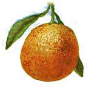

Scale are small creatures closely related to plant hoppers, whiteflies and aphids in the order Homoptera. The scales have tiny beaked mouths that suck juice from plants, finding food in a manner very similar to aphids. With the naked eye or even a hand lens, you would wonder if they were insects at all, for they do not have the outward appearance of a bug. From 3 to 4 millimeters in length, they appear like tiny turtle shells with no visible legs or wings, and they don’t show the more typical division between head and abdomen. In fact, the females are unusual because they have no wings at all, and often no legs.
To help protect your outdoor trees and shrubs from a scale infestation, paint Tanglefoot on cardboard, or something comparable, and wrap it around the tree trunk. This keeps away ants, which “farm” the scale and drive off the scale’s natural predators, parasitic wasps. Different scale species have their own companion parasitic wasps; if ants are not present to interfere, the wasps will usually kill the scale.
For houseplants, your best defense is to examine the plants carefully before you buy them, and then monitor them after you get them home. If you notice clusters of bumps on the leaves or stems, see if they rub off. If the bumps rub off and leave a sticky residue, you’ve just discovered a scale colony.
Many different species of scale exist, and all are susceptible to the same organic controls. As with aphids, scale produce a sticky honeydew (which is what attracts the ants), and if the honeydew builds up on leaves, it can turn dark with an unsightly black mold.
If mold has built up on the honeydew secretions, small amounts can be washed off by hand or with a gentle hose spray before you treat the plant. Mold on fruit sits only on the surface, so it can be washed off safely, too.
The best organic control of scale is a horticultural oil spray. The oil sprays are highly refined vegetable or petroleum products. Scale breathe through pores in their skin (again, similar to aphids); the oil plugs up the pores, suffocating the insects. If used in early spring on outdoor plants, it will suffocate scale embryos, too, and early application should prevent the mold from forming.
When you apply the oil, cover all plant surfaces and the ground within the drip line. If an outbreak occurs in summertime, wait until temperatures drop below 90 degrees to apply the oil. Some indoor and outdoor plants may suffer leaf burn from these oils, so use them with caution until you know how your plant responds. Or you can also research potential side effects before you treat the plants; information is widely available on the Internet or from your local Extension office.
If your houseplants show signs of scale any time of year, minor infestations can be treated by rubbing the scale off with a soft cloth dampened with water, or water combined with a spray oil or a mild dish detergent. Dabbing the scale with household rubbing alcohol works, too. Use a cotton swab or small art paint brush, and keep the alcohol off the plant as much as possible.
Once a plant is infected, it will need even closer monitoring, and heavy infestations may even force you to remove and dispose of the infected plant or plants. It pays to keep an eye out for these pests, and to work to control them when their numbers are small before it’s too late.
Houseplants most commonly attacked by scale, in addition to citrus, are schefflera, ferns, palms, ivy and ficus.
- John Stuart
|
 Tom Quirk Tiny brownish bumps on the fruit, leaves and stem are scale insects feeding. |
|
|